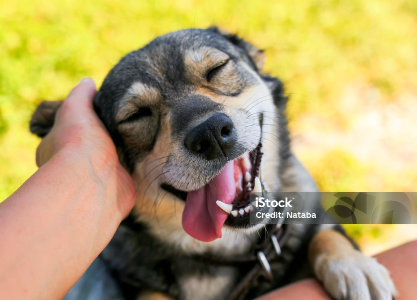
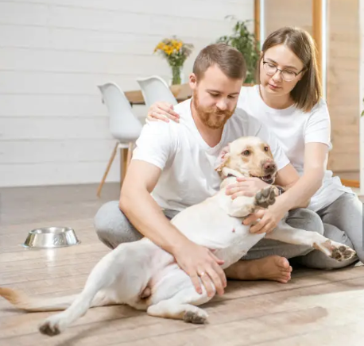

MISIÓN
HOPE engloba dos grandes ramas, protección animal y protección del ambiente.
Protección Animal:
El objetivo principal es contribuir a la solución del problema de la sobre población,
abandono y maltrato de animales domésticos, por medio de programas educativos,
concientización y campañas de esterilización y adopción, como también promover la defensa de los mismos.
VISIÓN
Crear conciencia en la sociedad respecto a la realidad de los animales en situación de abandono y lograr un cambio de actitud a través del ejemplo, la educación y la tenencia responsable de mascotas.
